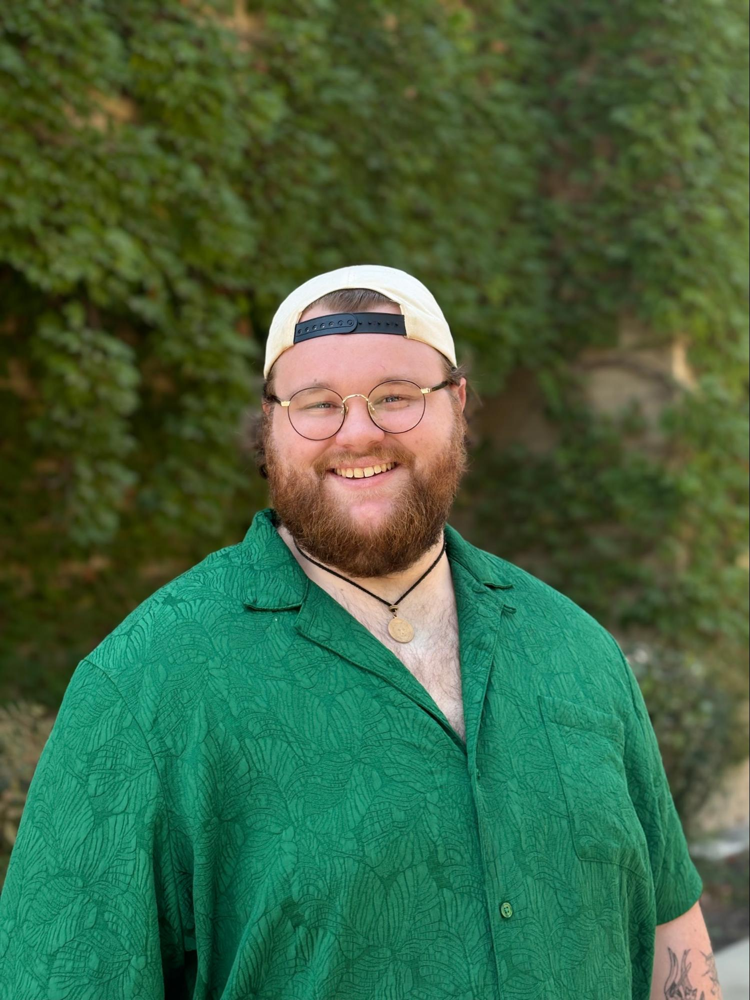

Meet Our Officers

Elliot Wilson
President
My name is Elliott Wilson and I am the President of CSUB's Model United Nations team. I've been in MUN for one year and joined because I'm interested in global politics and debate. After graduating I would like to pursue a career in foreign service or national security. This year I hope to increase club membership and activity on campus, as well as securing consistent fundraising strategies for future club success. I also want to make sure MUN members have a fun and educational time while they are a part of the club. In addition to my activity at the club, I'm also a Lead Volunteer at CSUB's Edible Garden and I am the ASI Director of the College of Social Sciences and Education. I also enjoy flying stunt kites and fishing when I get the chance.

Nayen Lepe-Koharchick
Vice President
Hello everyone! My name is Nayen Lepe-Koharchick. I am the Vice President for the CSUB Model UN Club. This is my second semester with the Model UN Club. I wanted to join because of my love for debate, negotiation, and strategy. All things that I would love to expand to students at CSU Bakersfield. I am currently majoring in Political Science with an emphasis in Global Politics and Pre-Law. After graduating, I hope to have a career in public policy, foreign policy, or campaign work. I just finished a summer internship with the Governor's Office in Sacramento. I intend to utilize new skills I learned there to help improve the Model UN club and CSU Bakersfield as a whole. I hope to make the Model UN club more active and have much larger memberships. I would love to see us doing more on campus activities. I hope to have the Model UN Club have a larger presence on the local college scene. Some of my hobbies include films, reading, writing, and video games I hope to see you at a meeting soon!

Caroline Hinojosa
Secretary
Hello everyone! My name is Caroline Hinojosa and I am serving as one of the Secretaries this year. I've been part of the club for about a year and originally joined to strengthen my public speaking skills and connect with other students who share an interest in global politics. I am currently a third-ever Economics major and plan to attend law school after graduation. With my background in public outreach, I'm excited to bring that experience to my role by helping recruit new members and introducing Model United Nations to students who may be unfamiliar with it. Outside of academics, I enjoy playing golf, experimenting with new recipes, and I'm also a fan of K-pop. Thank you, and I look forward to seeing you all at our meetings!

Jaiden Flores
Treasurer
Hi everyone! My name is Jaiden Flores, I am in my third year at CUB and my major is Political Science. My two emphases are Pre-law and American Politics, and I am also minoring in Public Policy. This will be my second year as a member of CSUB MUN and as the club's Treasurer I hope to raise as much money as possible this year so were able to attend more conferences in the future! Thank you, I look forward to meeting everyone at our weekly meetings!

Dylan Rogge
CO-Secretary
Hello everyone! My name is Dylan and I'm the Co-Secretary of CSUB MUN. I've been in MUN for 1 year and decided to join because of the simulations we get to do as well as the focus on international politics. I'm currently a senior majoring in Political Science. After graduating my plans are to continue with grad school. This year I hope to graduate and finish strong! Some fun facts about me include: I do lots of community theater, I'm really into both the gym and D&D, and I am a huge Nebraska Comhuskers fan (GBR). Excited to have a fun year with MUN!

Pictures
Click Above For Gallery
Pictures Of Our Club History
Want to Join Us?
We welcome students of all majors and experience levels. Whether you're new to Model UN or a seasoned delegate, there's a place for you in our club.
Get Involved